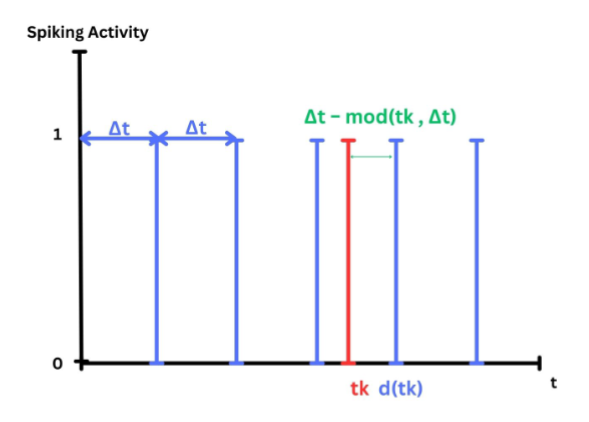
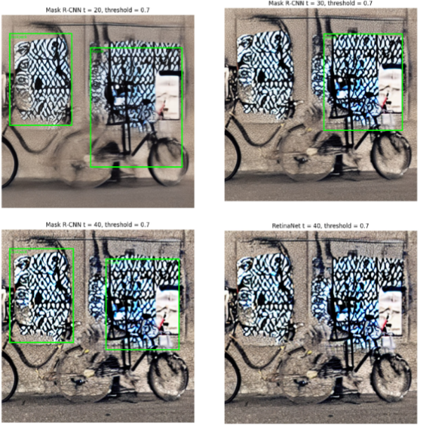

Specializing in neuromorphic computing, generative modelling, and computer vision. Passionate about AI and advancing technology through data-driven algorithms and architectures.
I am a master’s student with a background in computer science and some professional experience in software development. Alongside this foundation, I have been exploring the intersection of machine learning and computer vision, where I have worked on projects ranging from spiking neural networks (in an experimental setting) to image processing and generative modeling. I have also had some exposure to 3D approaches such as neural radiance fields.
While much of this work has been exploratory, I especially enjoy working with generative models and diffusion methods, and I am motivated to continue learning and deepening my understanding of both the practical and theoretical sides of machine learning
Specialization in Computer Vision and Advanced Machine Learning
Thesis Topic(yet to start): "Action Recognition with Spiking Neural Networks"
Thesis: "Impact of time discretization on the efficiency of continuous-time Spiking Neural Networks"
Supervisor: Dr. Nergis Tömen, Aurora Mitcheli
GPA: 7.9/10
Teaching Assistant for "Data Structures and Algorithms for Minor" and "Object Oriented Programming Project" courses.
Working in the infographics team at Adobe to extend and improve the AI-powered tools for generative templates or generative presentations.
Worked on the development of a web-based platform for managing and visualizing multi-modal transportation data as well as implementing backend services for data processing.
Implemented backend services and data processing pipelines for geospatial and traffic data.

Studied spike time discretization in spiking neural networks, proposing a causal scheme and analyzing its quantization error and effects on accuracy and sparsity across benchmark datasets.
Paper accepted at the Deep Learning meets Neuromorphic Computing Workshop, ECML-PKDD 2025.